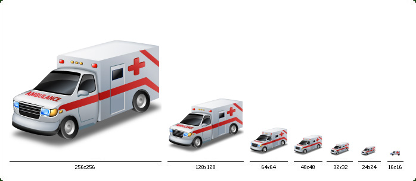
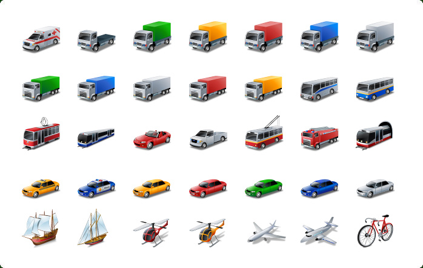

| Style: | Vista |
| Series: | Vista Style Icons |
| Count: | 20 |
| Variations: | 35 |
| Formats: | .PNG, .ICO |
| Colors: | TrueColor + Alpha |
| Sizes: | 16x16, 24x24, 32x32, 48x48, 64x64, 128x128, 256x256 |
| Price: | 40 USD |
This icon set represents 35 transports including cars, trucks, police, ambulance, taxi, subway, train, bus, airplane, helicopter, ship and more. The transports are pictured in Windows Vista style, making your applications always appear great. These icons are suitable for GPS, Maps, Sheduling, Transportation, Traveling and other software applications and websites.
| # | Icon Name | Var. | Meaning |
|---|---|---|---|
| 1 | Car | 5 | Car |
| 2 | Cabriolet | 1 | Cabriolet |
| 3 | Lorry | 5 | Lorry, Available Lorry, Full Lorry |
| 4 | Lorry Cab | 1 | Lorry Cab |
| 5 | Pickup | 1 | Pickup |
| 6 | Truck | 5 | Truck, Available Truck |
| 7 | Ambulance | 1 | Ambulance, First-aid car |
| 8 | Police Car | 1 | Police, Police Car |
| 9 | Fire Escape | 1 | Fire Escape, Fire-engine, Fire-Fighting Vehicle |
| 10 | Taxi | 1 | Taxi, Cab |
| 11 | Bus | 2 | Bus, Bus Station |
| 12 | Tram | 1 | Tram, Tramway Car |
| 13 | Trolleybus | 1 | Trolleybus, Trolley Bus |
| 14 | Train | 1 | Train, Railway Station, Railroad Terminal |
| 15 | Metro | 1 | Subway, Underground, Tube, Tube Railroad, Underground Railroad |
| 16 | Airplane | 2 | Airplane, Jet, Aircraft, Aviation, Airport |
| 17 | Helicopter | 2 | Helicopter, Ambulance Helicopter |
| 18 | Ship | 1 | Ship, Port |
| 19 | Yacht | 1 | Yacht |
| 20 | Bicycle | 1 | Bicycle |
| Total: 20 | 35 | 20 Icons, 35 Variations |
Preview of one icon in all sizes: 16x16, 24x24, 32x32, 48x48, 64x64, 128x128, 256x256

Preview of icons of Vista Style Transport Icon Set
